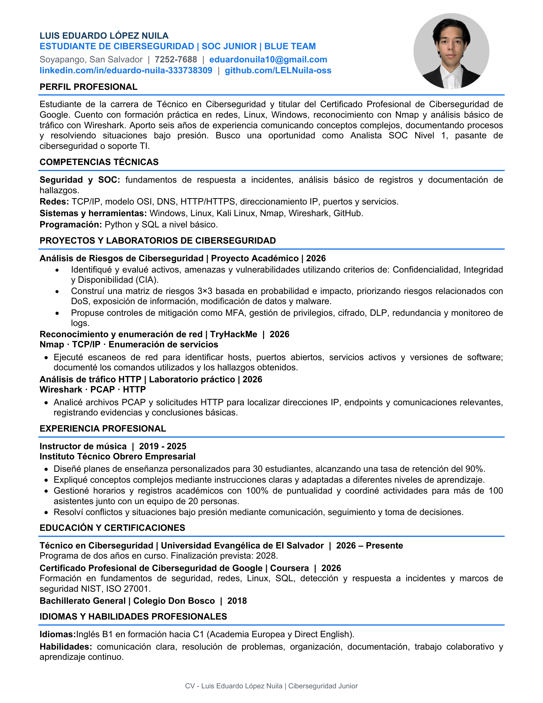

Cybersecurity Risk Analysis
Identified assets, threats and vulnerabilities using the CIA triad. Built a 3×3 risk matrix and proposed controls such as MFA, privilege management, encryption, DLP, redundancy and log monitoring.
Cybersecurity Student · SOC Junior · Blue Team
Cybersecurity student focused on security operations, networking, risk analysis and hands-on technical practice. Google Cybersecurity Professional Certificate holder with practical exposure to Nmap, Wireshark, Linux and Windows.
Identified assets, threats and vulnerabilities using the CIA triad. Built a 3×3 risk matrix and proposed controls such as MFA, privilege management, encryption, DLP, redundancy and log monitoring.
Used Nmap to identify hosts, open ports, active services and software versions, documenting commands and findings.
Analyzed PCAP files and HTTP requests with Wireshark to identify IP addresses, endpoints and relevant communications.
Universidad Evangélica de El Salvador · 2026–Present · Expected completion: 2028
Completed in 2026. Training included security fundamentals, networking, Linux, SQL, incident detection and response, NIST and ISO 27001 concepts.
